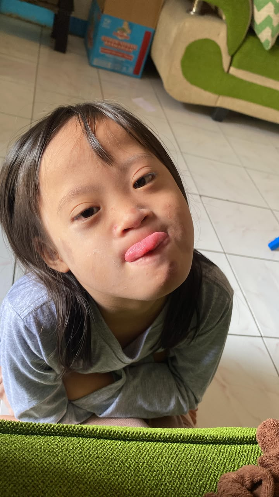

Tentang Different But Beautiful
Ruang kecil untuk belajar memahami bahwa setiap anak berharga, apa pun perbedaannya.

Setiap anak punya cerita yang layak didengar.
Different But Beautiful dibuat untuk mengajak kita mengenal Down Syndrome dengan sudut pandang yang lebih terbuka.
Kami percaya bahwa setiap anak memiliki potensi, perasaan, harapan, dan cara tersendiri dalam memahami dunia.
Tujuan kami sederhana: menumbuhkan kepedulian, mengurangi stigma, dan mengingatkan bahwa penerimaan bisa dimulai dari hal-hal kecil.
Aku Bukan Anak Nakal, Aku Hanya Sedang Belajar Memahami Rasa.
Jangan langsung menganggapku nakal ketika aku menarik tanganmu, menunjuk sesuatu, menggenggam terlalu erat, atau menyentuh dengan tenaga yang mungkin terasa berlebihan.
Terkadang, itulah caraku menyampaikan keinginan ketika aku belum sepenuhnya mampu mengungkapkannya dengan kata-kata.
Aku juga sedang belajar mengenali perasaan, memahami batasan, dan berkomunikasi dengan orang-orang di sekitarku. Aku punya rasa, aku bisa bahagia, sedih, takut, kecewa, dan ingin dimengerti seperti orang lain.
Jika caraku belum tepat, tuntunlah aku dengan sabar. Jangan buru-buru menghakimi atau memarahiku. Beri aku waktu untuk belajar, karena setiap proses membutuhkan pengertian.